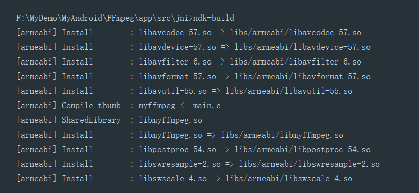

编译FFmpeg
准备
- Ubuntu 16.04 64位系统
- FFmpeg3.2.1 FFmpeg下载地址
- ndk-r13b （建议不要版本太高，否则gcc unable excute…）
流程
解压
解压
1
tar -zxvf ffmpeg-3.2.1.tar.gz
设置权限
1
chmod -R 777 ffmpeg-3.2.1
修改设置
进入文件
1
cd ffmpeg-3.2.1
修改configure
- 3.2.1版本的话,是第3245行
1
2
3
4
5
6
7
8
9
10
11# 将 configure 文件中的：
SLIBNAME_WITH_MAJOR='$(SLIBNAME).$(LIBMAJOR)'
LIB_INSTALL_EXTRA_CMD='$$(RANLIB) "$(LIBDIR)/$(LIBNAME)"'
SLIB_INSTALL_NAME='$(SLIBNAME_WITH_VERSION)'
SLIB_INSTALL_LINKS='$(SLIBNAME_WITH_MAJOR) $(SLIBNAME)'
#替换为
SLIBNAME_WITH_MAJOR='$(SLIBPREF)$(FULLNAME)-$(LIBMAJOR)$(SLIBSUF)'
LIB_INSTALL_EXTRA_CMD='$$(RANLIB)"$(LIBDIR)/$(LIBNAME)"'
SLIB_INSTALL_NAME='$(SLIBNAME_WITH_MAJOR)'
SLIB_INSTALL_LINKS='$(SLIBNAME)'- Android 工程中只支持导入 .so 结尾的动态库，形如：libavcodec-57.so 。但是FFmpeg 编译生成的动态库默认格式为 xx.so.版本号 ，形如：libavcodec.so.57 ， 所以需要修改 FFmpeg 根目录下的 configure 文件，使其生成以 .so 结尾格式的动态库.
赋予可执行权限
1
chmod 777 configure
make脚本
目录下新建 build.sh
1
2
3
4
5
6
7
8
9
10
11
12
13
14
15
16
17
18
19
20
21
22
23
24
25
26
27
28
29
30
31
32
33
34
35
36
37
38
39
40
41
42
43
44
45
46@Author: wl
@Date: 2018-10-10 14:45:55
@Last Modified by: wl
@Last Modified time: 2018-10-10 16:31:32
目的：
规定编译方式： 使其通过交叉编译生成需要的动态库
选择需要的功能: 针对需求定制FFmpeg功能，精简动态库
!/bin/bash
make clean
填写你自己对应具体的ndk解压目录
export NDK=/home/wl/Android/android-ndk-r13b
export SYSROOT=$NDK/platforms/android-19/arch-arm/
export TOOLCHAIN=$NDK/toolchains/arm-linux-androideabi-4.9/prebuilt/linux-x86_64
export CPU=arm
编译后的文件会放置在 当前路径下的android/arm／下
export PREFIX=$(pwd)/android/$CPU
export ADDI_CFLAGS="-marm"
./configure 即为ffmpeg 根目录下的可执行文件configure
你可以在ffmpeg根目录下使用./configure --hellp 查看 ./configure后可填入的参数
虽然我也不是很了解这是啥意思
./configure --target-os=linux \ #目标系统
--prefix=$PREFIX --arch=arm \ #目标平台架构
--disable-doc \ #禁用不需要的功能，下同
--enable-shared \
--disable-static \ #禁止生成静态库
--disable-yasm \
--disable-symver \
--enable-gpl \
--disable-ffmpeg \
--disable-ffplay \
--disable-ffprobe \
--disable-ffserver \
--disable-doc \
--disable-symver \
--cross-prefix=$TOOLCHAIN/bin/arm-linux-androideabi- \
--enable-cross-compile \
--sysroot=$SYSROOT \ #交叉编译环境
--extra-cflags="-Os -fpic $ADDI_CFLAGS" \ #额外需要的头文件
--extra-ldflags="$ADDI_CFLAGS" \ #额外需要的库
$ADDITIONAL_CONFIGURE_FLAG
make clean
make
make install
方式二
使用Android Studio开发FFmpeg的正确姿势- 说是可以编译多个平台的，但是自己尝试后没有成功
赋予执行权限
1
chmod 777 build.sh
执行脚本
1
./build.sh
只要不报错,等待个十来二十分钟就可以了

结果

Android使用FFmpeg
项目总览

新建项目
- 直接正常创建项目而不是使用AS自带的JNI项目
配置C文件
src文件下创建jni目录
将编译之后的
include和lib目录下所有.so文件拷贝至jni目录下在
java目录下实现对应native方法。新建操作类，为了实现分离，案例中的是
FFmpeg.java1
2
3public class FFmpeg {
public native String urlprotocolinfo();
}生成对应的
.h文件在
java目录下执行javah com.yfsd.ffmpeg.FFmpeg执行完成后需要等待几秒,然后刷新一下。就会发生生成了一个
com_yfsd_ffmpeg_FFmpeg.h文件
编写对应
.c文件，名称随意将
.c和.h文件全部复制到jni目录下面
配置mk文件
Android.mk
1
2
3
4
5
6
7
8
9
10
11
12
13
14
15
16
17
18
19
20
21
22
23
24
25
26
27
28
29
30
31
32
33
34
35
36
37
38
39
40
41
42
43
44
45
46
47
48
49
50
51LOCAL_PATH := $(call my-dir)
# FFmpeg library
include $(CLEAR_VARS)
LOCAL_MODULE := avcodec
LOCAL_SRC_FILES := libavcodec-57.so
include $(PREBUILT_SHARED_LIBRARY)
include $(CLEAR_VARS)
LOCAL_MODULE := avdevice
LOCAL_SRC_FILES := libavdevice-57.so
include $(PREBUILT_SHARED_LIBRARY)
include $(CLEAR_VARS)
LOCAL_MODULE := avfilter
LOCAL_SRC_FILES := libavfilter-6.so
include $(PREBUILT_SHARED_LIBRARY)
include $(CLEAR_VARS)
LOCAL_MODULE := avformat
LOCAL_SRC_FILES := libavformat-57.so
include $(PREBUILT_SHARED_LIBRARY)
include $(CLEAR_VARS)
LOCAL_MODULE := avutil
LOCAL_SRC_FILES := libavutil-55.so
include $(PREBUILT_SHARED_LIBRARY)
include $(CLEAR_VARS)
LOCAL_MODULE := postproc
LOCAL_SRC_FILES := libpostproc-54.so
include $(PREBUILT_SHARED_LIBRARY)
include $(CLEAR_VARS)
LOCAL_MODULE := swresample
LOCAL_SRC_FILES := libswresample-2.so
include $(PREBUILT_SHARED_LIBRARY)
include $(CLEAR_VARS)
LOCAL_MODULE := swscale
LOCAL_SRC_FILES := libswscale-4.so
include $(PREBUILT_SHARED_LIBRARY)
# Program
include $(CLEAR_VARS)
LOCAL_MODULE := myffmpeg #模块名字母
LOCAL_SRC_FILES := com_yfsd_ffmpeg_FFmpeg.c #你编写的.c文件
LOCAL_C_INCLUDES += $(LOCAL_PATH)/include
LOCAL_LDLIBS := -llog -lz
LOCAL_SHARED_LIBRARIES := avcodec avdevice avfilter avformat avutil postproc swresample swscale
include $(BUILD_SHARED_LIBRARY)Application.mk
1
2
3
4# 这个设置设备的架构，因为我们在ubuntu编译.so文件时候，设置的是arm，所以这里的设置armeabi
# 注意，虚拟机是无法使用的，因为虚拟机是x86
APP_ABI := armeabi
APP_PLATFORM=android-14
NDK
进入到
jni目录下,执行ndk-build
在
src目录下，会生成一个libs的文件，将里面的armeabi文件夹复制到app目录下的libs中
完善
设置
build.gradle文件下的android中设置sourceSet1
2
3
4
5
6
7
8
9
10
11
12
13
14
15
16
17
18
19
20android {
compileSdkVersion 25
buildToolsVersion "28.0.3"
defaultConfig {
...
ndk {
abiFilters 'armeabi'
}
}
sourceSets {
main {
jniLibs.srcDirs = ['libs']
}
}
buildTypes {
...
}
}
}操作类FFmpeg.java
1
2
3
4
5
6
7
8
9
10
11
12
13
14public class FFmpeg {
static {
System.loadLibrary("avutil-55");
System.loadLibrary("avcodec-57");
System.loadLibrary("avformat-57");
System.loadLibrary("avdevice-57");
System.loadLibrary("swresample-2");
System.loadLibrary("swscale-4");
System.loadLibrary("postproc-54");
System.loadLibrary("avfilter-6");
System.loadLibrary("myffmpeg");
}
public native String urlprotocolinfo();
}MainActivity.java
1
2
3
4
5
6
7
8
9
10
11
12
13
14
15
16public class MainActivity extends AppCompatActivity {
private TextView mText;
private FFmpeg fFmpeg;
protected void onCreate(Bundle savedInstanceState) {
super.onCreate(savedInstanceState);
setContentView(R.layout.activity_main);
mText = (TextView) findViewById(R.id.mText);
fFmpeg = new FFmpeg();
mText.setText( fFmpeg.urlprotocolinfo());
}
}
小结
备注
- 本文链接：https://www.wl960127.top/posts/37996/
- 版权声明：本站内容均为个人学习笔记,不涉及商业用途，仅提供学习参考,第三方摘录已署名链接,未署名请评论添加,转载署名来源即可。
分享